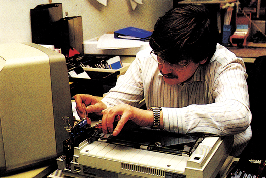
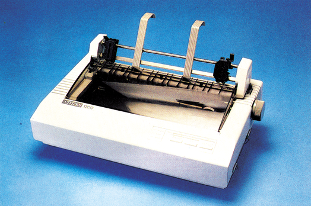
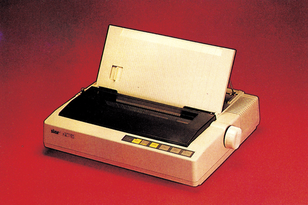
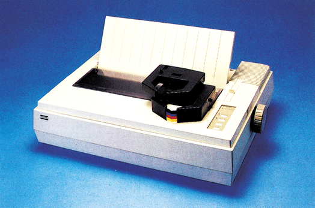

So testen wir - das sind unsere Referenzdrucker
Wer Messungen durchführt, muß einen Maßstab haben. Das gitt fürs Landvermessen ebenso wie für einen Hardware-Test. Doch wie findet man einen geeigneten Maßstab bei einer so vietfähigen Materie? Ganz einfach — man nimmt das beste was man bekommen kann — unsere Referenzdrucker waren geboren.
Es sind nun genau zwei Jahre, seit es Ihre 64’er gibt, sie wird von Fachredakteuren gemacht, die sich seit vielen Jahren mit der Materie Computer und allem was dazugehört beschäftigen. Im Laufe der Zeit sammelt so ein Redakteur (Bild 1) eine Menge Erfahrung. Daraus entwickeln sich Meß- und Testverfahren, die zum einen einen objektiven Vergleich verschiedener Produkte und zum anderen ein möglichst präzises Testergebnis ermöglichen. So haben wir beispielsweise einen Drucker-Test entwickelt, der versucht, belegbare Meßdaten (Labortest) mit dem tatsächlichen Nutzen des Gemessenen (Praxistest), zu vereinigen. Dieses Testverfahren wollen wir Ihnen kurz beschreiben. Jeder Drucker, der getestet werden soll, muß zunächst über unsere Meßstrecke. Dabei wird festgestellt, wie schnell er tatsächlich ist ohne Beeinflussung durch Programm, Schnittstelle oder Zeilenvorschub im reinen Zeichendruck. Falls der Drucker einen NLQ-Modus besitzt, wiederholen wir diesen Test mit der NLQ-Schrift (dann allerdings durch den Computer gesteuert). Diesen Wert vergleichen wir mit den Angaben des Herstellers. Falls sich eine Abweichung ergibt, finden Sie diesen Wert in der Tabelle und/oder dem Text wieder. Der nächste Test besteht aus einem genau 8 KByte langen Probetext, der alle die Geschwindigkeit beeinflussende Faktoren berücksichtigt. Dazu gehören das Drucken von einzelnen Zeichen Qe eines am linken und rechten Rand), von halben Zeilen (Drucklogiktest), ganzen Zeilen mit verschiedenen und Zeilen mit gleichen Buchstaben (wichtig für Typenraddrucker, um die Drehgeschwindigkeit zu ermitteln) und einem Absatz von Fließtext mit Sonderfunktionen. Der letzte Teil des Tests besteht aus hundert Zeilenvorschüben, denn auch die sind wichtig. Die so ermittelte Druckzeit stellt einen Durchschnitt über alle Leistungen des Druckers dar. Wir halten es für wenig sinnvoll, jedes Einzelergebnis des Probetextes zu veröffentlichen, denn wer druckt normalerweise schon 1000mal den Buchstaben »A« in einer Zeile. Es ist vielmehr wichtig, eine Vergleichszahl zu finden, die es ermöglicht, verschiedene Drucker auch über längere Zeiträume miteinander zu vergleichen. Der letzte Teil unseres Tests besteht darin, daß der Redakteur seinen Redaktionsdrucker wegstellt und an dessen Stelle mit dem Testgerät praktisch arbeitet. In dieser Zeit werden alle Funktionen des Druckers ausprobiert, seine Handhabung bewertet und versucht, Anpassungen an verschiedene Programme zu machen. Außerdem werden alle zur Verfügung stehenden Erweiterungen wie Einzelblatteinzug und verschiedene Schnittstellen durchgetestet.

Preisklasse 1 (bis 1000 Mark)
In der Ausgabe 2/86 konnten wir dem Citizen 120 D (Bild 2) als erstem Drucker dieser Preisklasse das Prädikat »Referenzdrucker« verleihen. Durch seine gemessen am relativ niedrigen Preis von 998 Mark erstaunlichen Leistungen, zu denen eine NLQ-Schrift, eine Druckgeschwindigkeit von 140 Zeichen pro Sekunde in der Normalschrift und 24 Zeichen pro Sekunde in der NLQ-Schrift sowie einige praktische Detaillösungen gehören, konnte er den Titel erringen. In dieser Preisklasse muß man natürlich auch Abstriche machen: So ist der 120 D nicht so massiv aufgebaut wie die Drucker der höheren Preisklassen, aber er erfüllt seine Aufgabe bestens und hat mit seiner zweijährigen Garantie in diesem Bereich neue Maßstäbe gesetzt.

Preisklasse II (bis 1400 Mark)
Er ist brandneu und er ist gut — der Star NL-10 (Bild 3). Einen ausführlichen Testbericht finden Sie in dieser Ausgabe. Dort steht auch, warum der NL-10 so ideal zu Commodore-Computern paßt. Er hat in dieser Preisklasse den Star SG-10 (sein Vorgängermodell) abgelöst, der sich mittlerweile bei vielen C 64-Besitzern großer Beliebtheit erfreut. Der NL-10 (1145 Mark) ist wohl der beste Schwarzweiß-Drucker, den man in dieser Preislage derzeit erhalten kann.

Preisklasse III (bis 2000 Mark)
Jetzt kommt Farbe ins Spiel. In der höchsten Preisklasse konnte sich der Fujitsu DX 2100 (Bild 4) gegenüber dem Epson FX-85, der diesen Posten ein halbes Jahr bestens bekleidet hat, erfolgreich durchsetzen.

Das für Personal- und Heimcomputer ideale Konzept des DX 2100 mit extrem schnellem (220 Zeichen) und schönem Druck (NLQ) und einer sehr guten Farbfähigkeit macht ihn zum Spitzenreiter unserer Referenzdrucker. Mit einem Preis von 1932 Mark und 456 Mark Aufpreis für die Farboption ist er zwar nicht billig, aber gemessen an seinen Leistungen preiswert.
Was bringt die Zukunft
Der Druckermarkt ist einer der bewegtesten und am heißesten umkämpften in der Computerbranche überhaupt. Ein wildes Pulsieren von neuen Modellen und ständiger Leistungssteigerung bei sinkenden Preisen machen es für den Kunden zum interessanten Abenteuer, dieser Entwicklung zuzusehen. Das Jahr 1986 wird sicherlich voller Überraschungen sein, denn für die Druckerhersteller heißt es heute die Marktanteile von morgen zu sichern. Dazu lassen sie sich einiges einfallen. Einen Drucker wie beispielsweise den NL-10 oder den DX-2100 hätte man noch vor drei Jahren nicht unter vier- bis fünftausend Mark erhalten können, wenn überhaupt. Aber der Entwicklung sind Grenzen gesetzt, denn Drucker bestehen zum großen Teil aus Mechanik, und die ist in der Produktion teuer. Die Druckerhersteller sind wohl mittlerweile an dem Punkt angelangt, an dem sich durch Kostensenkungen bei der Elektronik keine wesentlichen Preissenkungen beim Endgerät mehr erzielen lassen. Soll die mechanische Qualität erhalten bleiben, so dürften sich die Preise in Zukunft wohl nur noch wenige Hunderter unter dem derzeitigen Niveau einpendeln. Ein zusätzliches Verkaufsargument wird dann nur noch durch zusätzliche Leistungssteigerung zu erreichen sein — man darf sich freuen!
(aw)